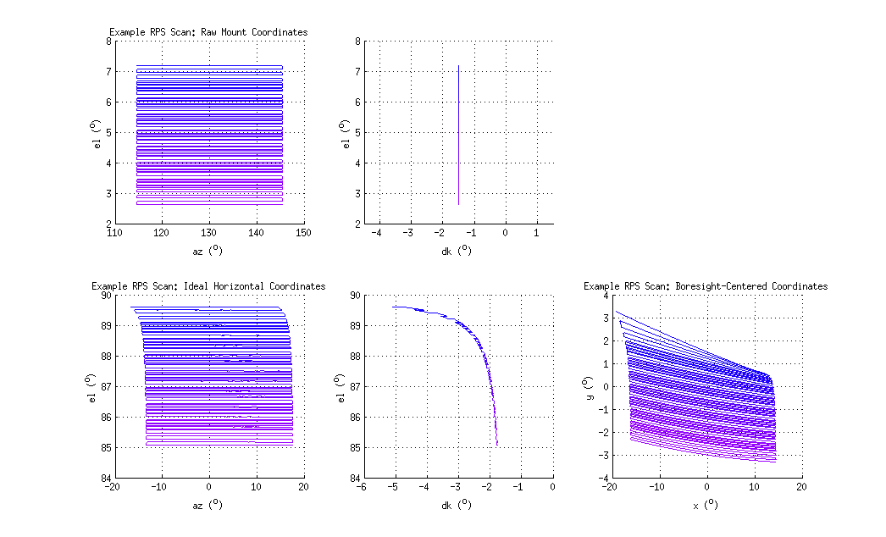

In most beams analysis (FFBM, RPS, FSL), the procedure to create beam maps from raw data is essentially the same:
Convert Raw Mount Coordinates $(A_0,E_0,K_0)$ into topocentric ideal horizontal coordinates $(A,E,K)$
Uses invpointing_model.m with star pointing model as an additional input.
Convert ideal topocentric coordinates $(A,E,K)$ to detector-centered $(x',y',\phi')$ coordinates.
Uses keck_beam_map_pointing.m with mount, mirror, source, and FPU information as additional inputs.
The inverse pointing model returns the horizontal coordinates of the mount boresight pointing as they are projected on to the local topocentric unit sphere.
As as result, if we have non-zero Az/El tilts, we can expect to wide swings in Azimuth and Deck as the boresight approaches Zenith.
However, only these ideal coordinates are passed to the beam map pointing model and so we lose the knowledge of the physical orientation of the source.
As can be seen in Figure ##, this can introduce large errors in the scan as projected into instrument-fixed coordinates as the pointing model blindly assumes that the orientation of the focal plane rapidly changes as well.

Simply put, we've been using these functions incorrectly, but neither pointing model adequately provides the functionality we need. To fix that, we created a new function which moves the function of invpointing_model into keck_beam_map_pointing and named it beam_map_pointing_model.m. We created this new function in lieu of just upgrading keck_beam_map_pointing to avoid breaking other analysis pipelines and also because the Keck prefix is a bit confusing since the experiment technically doesn't exist anymore. Th new function:
Converts Raw Mount Coordinates $(A_0,E_0,K_0)$ directly to detector-centered coordinates $(x',y',\phi')$ or any intermediate coordinate system.
Takes offline pointing model, mount, mirror, source, and focal plane information as additional inputs.
One thing Colin points out in his posting is that keck_beam_map_pointing doesn't apply mount tilts to the pointing of the mirror which we need to account for in RPS analyses. Some of the keck_beam_map_pointing subfunctions have been updated, but have been done so in such a way that conserves backward compatibility.
kbmp_mirror now applies az/el tilts to the mirror normal.
kbmp_mount can now account for the origin of az/el tilts.
Code Tests
Below I compare the outputs of beam_map_pointing_model to invpointing_model.m and keck_beam_map_pointing.m to show that the internal mechanics are functionally unchanged. Comparison is accomplished simply by passing no mirror or source parameters to beam_map_pointing_model. For most cases, the residuals are close to (but not quite) machine precision.
The caption.
Note that the residuals are relatively high for any non-zero combination of Az tilt Lat/HA. It's not clear to me why that is. Regardless, the actual Az tilt lat/HA's from star pointing are much smaller (<0.5 arcmin) and the residuals are O($10^{-9}$ °) at most so we should be okay to proceed.
Physical tilt origins
Because we use nearby terrestrial sources, we account for parallactic effects and thus may need to consider the origin of the tilts as well since they affect the position of the aperture and mirror. The tilted base case could also include the tilt of the entire building.
The caption.
How much does this actually matter though? The worst-case scenarios are listed below. The upper limit on the individual possible bias is roughly on the level of the systematic error I calculated for the mirror roll from error propagation. BUT the direction of the tilts may serve to cancel-out some effects. So while not immediately worrying, this may need further investigation in the future. For now, we place the origin of the Azimuth tilt at the base of the telescope and the origin of the Elevation tilt at elevation axis.
Tilt Dir.
Case
Tilt (from Starpointing) (°)
Roll Bias (°)
Angle Bias (°)
Az HA
Tilted Building (<20m)
~0.003
~0.02
~0.02
El HA
Upper Az bearing (<4m)
~-0.03
~-0.03
~-0.03
Appendix
Code
Below is a list of code that was used for this analysis. The code is committed to the pipeline and can be found in the analysis/beammap/ directory.